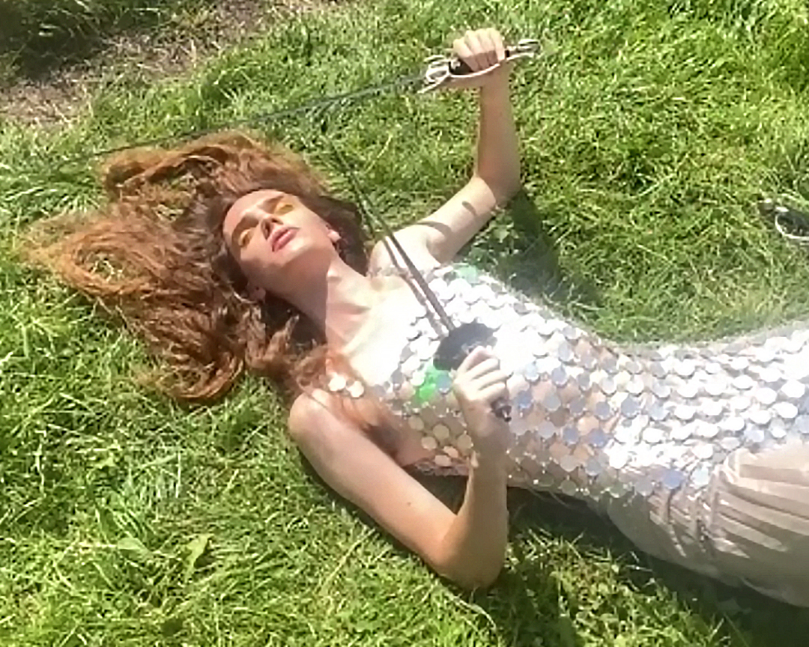

photography by Nicolette Clara Iles - hi res image
Rubie is a songstress, producer, multi-instrumentalist and unbridled trans voice from south London. Ranging from power ballads to art pop to folk rock, her writing presents a slippery manifesto for building defiant worlds in the face of trauma, oppression and apocalypse.
Whatever Cage is her most direct, outward looking and accessible work yet; teaming up on production with Toby Burroughs of Pozi, Rubie queers a sonic palette of alt pop, folk rock and experimental electronic to demand political change in the wake of the pandemic. Sicily is a pained demand to be busted out and driven away from her oppressors; Transcendence Next to Water paints a idealised portrait of centrist dads radicalised into acid communism, and Don't Come Back, featuring Rubie's old friend and icon of the Brighton drag scene Asher Fynn, is a call from the afterlife to stand up and fight for medical justice.
The cover art, made in collaboration with Nicolette Clara Iles, is inspired by the 8 of swords tarot card, which usually depicts a bound and blindfolded figure who can't see a way out of a situation. Nicolette, whose artwork explores spiritual practice through the lens of chronic illness, shot the cover and press photos over a zoom call, honouring the many people for whom the pandemic is not over; the immunocompromised, those living with physical and mental health repercussions, and those who lost family, blood and chosen.
Since releasing her debut album Take Both in 2020, Rubie's been prolific in London's musical and artistic underground, including work with Jenny Moore, Carl Gent & Charles Hayward and F*Choir, and playing opening spots with Pozi, Piglet and Living Body. The Whatever Cage EP Launch party, featuring performances from Rubie, Tarantina and Asher Fynn, will take place on 30 November at Walthamstow Trades Hall.
written and produced by Rubie
track 5 cowritten with Asher Fynn
drums on 2, 4, 5 by Kit Denison
vocals and piano on 5 by Asher Fynn
all other instruments, sounds and vocals by Rubie
engineered, co produced and mixed by Toby Burroughs at Rumbaba Studio
mastered by Katie Tavini at Weird Jungle
photography by Nicolette Clara Iles, styled by Nina Scott
special thanks to London Historical Fencing Club for lending us their swords
For any further information contact Rubie:
rubie@rubie.live
xxx
photography by Nicolette Clara Iles - hi res image
{kind=link}
{kind=link}